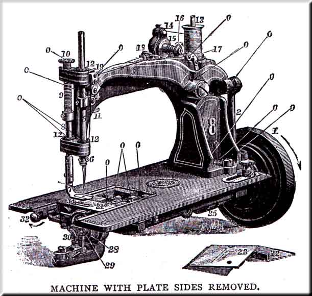
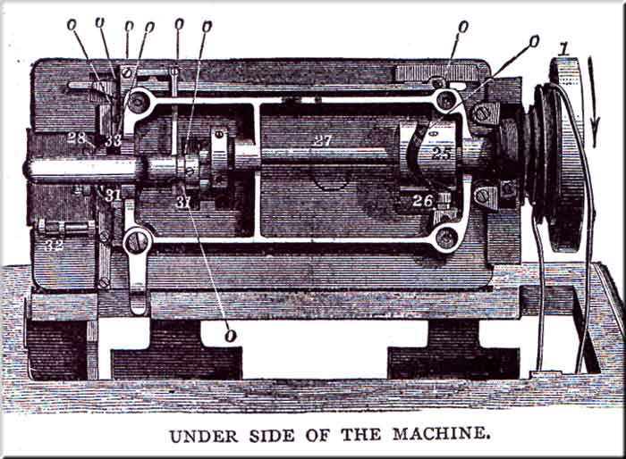
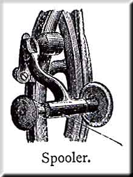
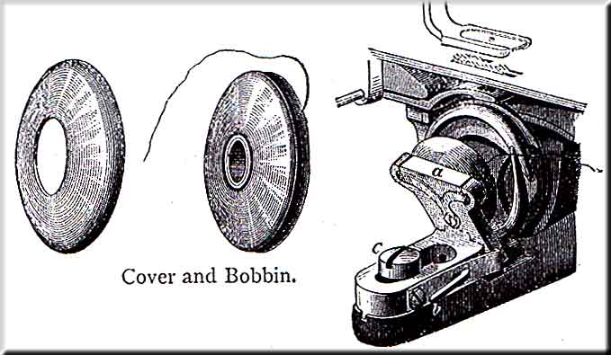
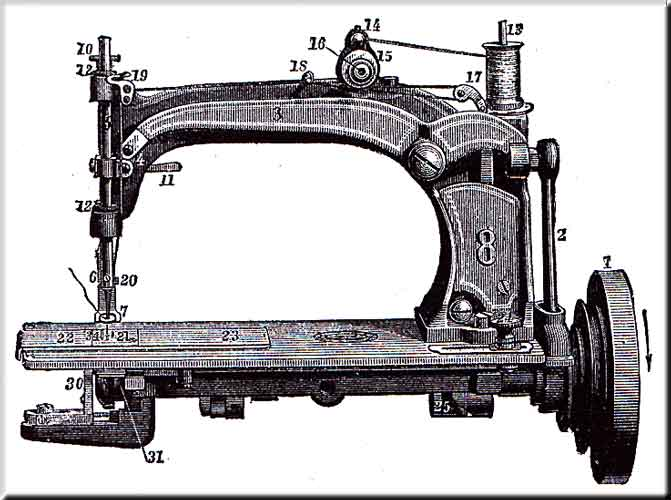

These directions should be carefully studied and followed by persons learning to operate the machine.
Allow no person interested in the sale of other Sewing Machines to handle the machine in any manner whatever.
Allow the machine to be adjusted or repaired by no one but an authorized agent, or at one of our offices.
If the machine needs repairing take it off the table, enclose it, with the hemmer, bobbins, and bobbin cover, in a small box, with the name and address of the owner written plainly and tied to it, and send it to some office or agency for the sale of our machines, and it will be put in order and promptly returned.
-----------------------------------------
12 Needles; 1 Thumb Screw; 1 Extra Needle Set Screw; 4 Bobbins; 1 Bobbin Cover; 1 Plate Gauge; 1 Quilting Gauge; 1 Coarse Throat Plate; 1 Screw Driver; 1 Oil Can; 1 Emery Wheel; 1 Black Wrench; 1 Steel Wrench; 1 Braider; 1 Gathering, 1 Side-cut, and 1 Corder Glass; 1 Hemmer; and 1 Copy Printed Instructions.


| 1. Band Wheel |
13. Spool Wire |
25. Take-up Cam |
| 2. Connection |
14. Thread Check |
26. Take-up Cam Roller |
| 3. Needle Lever. |
15. Tension Pulley |
27. Main Shaft |
| 4. Needle Lever Link |
16. Tension Nut |
28. Rotating Hook |
| 5. Needle Lever Bar |
17. Take-up |
29. Bobbin and Cover |
| 6. Needle Lever Set Screw |
18. Thread Leader |
30. Bobbin Holder |
| 7. Presser-foot |
19. Guide Roller |
31. Feed Cams |
| 8. Presser Bar |
20. Needle Bar Thread Guide |
32. Lower Tension Screw |
| 9. Presser-foot Spring |
21. Throat Plate |
33. Feed Bar |
| 10. Pressure Thumb Screw |
22. Front Plate Slide |
34. Feed Points |
| 11. Presser Lifter |
23. Back Plate Slide |
. |
| 12. Oil Cups |
24. Stitch Regulating Knob |
. |
To Oil the Machine -- Use the best Sewing Machine Oil, to be had of our agents, and at out offices. Oil at all places indicated by the letter O, in the cuts, at the bottom of the connection, and around the feed-bar, wherever there is friction. The parts on the underside of the machine may best be cleaned and oiled by removing the belt and turning the machine back, as shown in the cut.
NOTE -- When the machine is turned back, as for cleaning and oiling, the little ball in the take-up cam may slip down into the notch made for entering it, and prevent the machine from turning. If so, it should be raised out of the notch with the end of the finger before turning the machine down.
Below the table, oil the bearings of the treadle; the pins through each end of the pitman, and the balance-wheel shaft through two holes above it.
Oil the spooler occasionally.
After oiling, remove the bobbin and case, raise the presser-foot, and run the machine rapidly a minute; then wipe off all superfluous oil, to prevent soiling the goods. If the machine runs hard at any time, it is certain that some part has not been oiled.
Use the fine throat plate with needles from No. 1 to No. 5; for larger the coarse one must be substituted, as the fine one would chafe off the thread.
Make yourself familiar with the motion of the treadle by running the machine without thread and with the presser-foot raised, until a regular motion is attained.
(Never run the machine with the presser-foot down, except when sewing, as it will scratch the foot and dull the feed points)
To Set the Needle -- Loosen the needle set screw, insert the needle with its long groove towards the right; be sure to push the needle as far into the socket as it will go, and secure it firmly with the set screw.
To Wind the Bobbin -- Throw off the belt, turn down the spooler, and place the bobbin on the spindle. See that it runs true. Hold the end of the thread with the right hand, and with the left wind the thread several times around the bobbin, or until the end is secured, and then break off the end to prevent its being caught up and sewed into the seam before the bobbin is empty. Then wind the bobbin by operating the treadle, holding the thread firmly between the thumb and finger, and allowing it to pass from one side of the bobbin to the other, that it may be wound tight and even.
To Place the Bobbin -- Draw out the plate-slide, loosen the bobbin-holder and draw it back. Place the bobbin within the ring and lay both in the fork of the bobbin-holder, with their lower edges within the cavity of the rotating hook. Let the ring be next to the bobbin-holder, with the thread winding from the bottom of the bobbin and toward the operator, push up the bobbin-holder and tighten the screw firmly.

To Place the Bobbin in those Machines fitted with a Hinged Bobbin-Holder -- Press the lever (b), and turn back the drop (a). Place the bobbin within the cover, and lay both upon the drop, with their lower edges within the cavity of the rotating hook. Let the cover be next to the drop and the bobbin next to the rotating hook, the thread winding from the bottom of the bobbin toward you, as shown in the cut. Turn up the drop till secured by the catch.
(NOTE -- Before inserting the bobbin, the inside of the cover should be wiped out with an oiled rag, to remove lint or dirt, and to oil the inside of the cover)

To Thread the Machine -- Place the spool on the spool-wire, pass the thread over the thread-check, down the left side of the tension pulley, once round it in the groove, and through the take-up; loop it through the leader, over the guide-roller, through the needle-bar thread-guide, and thread the needle from right to left, all as shown in the cut. Let the thread extend through the needle two or three inches when the take-up is fully back. Now hold the end of the upper thread loosely between the thumb and finger, and turn the machine carefully while the needle goes down and up once, then draw the upper thread and with it the under thread up through the hole in the throat plate, and pass them both back under the presser.
To Commence Sewing -- Place the cloth beneath the needle, and let down the presser-foot by dropping the presser-lifter. Place your finger upon the ends of the threads till one or two stitches are taken. Start the machine by turning the band-wheel towards you. Do not pull or push the work -- the machine feeds it. If it does not, the feed is turned off.
The Length of the Stitch -- is governed by the stitch regulating knob. Push the knob to the right to lengthen, and to the left to shorten the stitch. Keep the knob screwed down sufficiently to prevent it from moving by the running of the machine, but not so tightly as to prevent it sliding easily when pressed against by the thumb and finger.
Regulate the Tension -- of the upper thread by turning the tension nut, Turn it as indicated by the arrow (page 2) to tighten the tension, the other way to loosen it. To tighten the tension of the under thread, turn the tension screw as indicated by the arrow (page 2), and the other way to loosen it. In sewing soft, thin fabrics, the tension of both threads should be loose; on thick and heavy goods it should be tight. In sewing seams where strength is required, the tension should be alike on both threads, in order that the lock may be in the centre of the goods. In stitching, however, where the upper side is the right side, the under tension may be tightest, that the lock may be below the centre. And if the lower side is for the right side, the upper tension may be the tightest, that the lock may be drawn above the centre.
The best way is to regulate the tension of the upper thread before starting, so that when pulling the thread some tension will be felt, but not near enough to break it. And then while sewing adjust the under tension (by turning the screw) till the lock is as desired. If both tensions are then found to be too tight or too loose, change the upper one first and regulate the under one to correspond as before.
The greatest secret of perfect sewing lies in the proper adjustment of the tensions.
To Remove the Work -- Stop the machine just before the take-up is fully back, which is before either thread is tightened. Take hold of the thread near the needle arm and pull two or three inches of thread from the spool. Raise the presser-foot and draw out the work from you, far enough to draw out the slack thread, and cut both threads near the cloth, by drawing them across the thread-cuter at the lower end of the needle-bar. Pass the thread back under the presser-foot in position for starting again.
Regulate the Pressure of the Presser-foot -- by turning the thumb-screw. Heavy goods require more pressure than light. Have only enough to keep the work down.